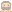
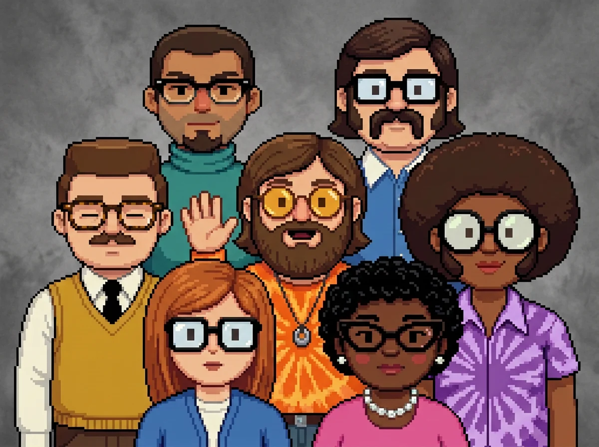

Every agent, at a glance,
right in your notch.
For Claude Code on Mac
Each agent, sub-agents too, gets its own row and its own little programmer. See who is working, on which model, and who needs you, without leaving your app.
brew install morsechimwai/tap/agent-valley Reading this on a phone? Run the command on your Mac.
Free · Open source · macOS 15 or later · For MacBooks with a notch
Homebrew builds it on your Mac from the source. No Homebrew yet? Get it at brew.sh.
Five agents running. Which one is waiting for you?
Each agent (meaning) reports in its own terminal (meaning), line by line. Run a few sessions (meaning) at once and you end up (meaning) switching windows just to check on (meaning) them.
Every agent gets a row.
Sessions get a card (meaning). Sub-agents (meaning) get rows under it. Each row shows the task, the model (meaning) and the latest step (meaning). Sub-agent rows count their steps too.
Every session in one list, whichever terminal it runs in.
No guessed progress bars. If an agent goes quiet (meaning), AgentValley says so.
Know the moment one needs you.
When an agent asks a question or waits for permission, a red count appears beside the notch (meaning). Open the panel to read the question or the command.
- Jump (meaning) to its app in one click. Turn on Go to the session's tab, and Terminal and iTerm2 open the exact tab. Ghostty does too, unless two sessions run in the same folder.
- Answer Claude Code from the notch with Allow once or Deny, using a plugin (meaning) you install yourself.
- Sounds stay off until you turn them on.
See what each project cost.
Pick a day, a week or a month, then go back to any earlier one. Choose a day for its hours, or a project for its sessions.
At API prices (meaning). Kept on your Mac, even after Claude Code clears its old files.
It reads. It doesn't touch.
- Reads ~/.claude/
projects and ~/.claude/ sessions, the files Claude Code writes as it works. - Looks at Claude Code's processes (meaning) and each project's .git (meaning) to show which app and branch a session is in.
- Reads your Claude Code login from the Keychain (meaning) only when you turn on Plan limits (meaning), and sends it only to api.anthropic.com.
- Besides its own settings, it writes only in one folder: ~/Library/
Application Support/ AgentValley. Nothing in ~/.claude changes. - The only hook (meaning) is the plugin that brings Allow and Deny to the notch, and you install it yourself.
- Never answers for you. Allow happens only when you choose it.
- Open source (meaning). Read every line on GitHub.
Meet the crew.
Every agent is a programmer from the early days of computing. The face tells you the type. The pose tells you the state.
Types
- SessionSunny, Walt, Norm or Pearl
- PlanJudy
- ExploreFaye
- General-purposeFelix
States
- Working — bobs (meaning) and blinks
- Needs you — waves

Quiet — looks away- Done — eyes closed
Nothing running? Just a cup of coffee.
Also in the panel.
- Plan limits
- Your Claude 5-hour and weekly limits, with time left until reset. Off until you turn it on.
- Token use
- Tokens (meaning) for the last 5 hours and today, with a 12-hour chart.
- Keyboard
- Press ⌃⌥⌘A from any app. Arrows to pick, Return to jump.
Put the valley in your notch.
brew install morsechimwai/tap/agent-valley Needs macOS 15 or later, Homebrew (meaning), and Claude Code. Made for MacBooks with a notch.
No Homebrew yet? Get it at brew.sh.
After you paste it
- Homebrew builds (meaning) the app on your Mac. It takes a minute or so (meaning).
- Open it:
open "$(brew --prefix)/opt/ agent-valley/ AgentValley.app" - The panel opens once to show where it lives. After that, point at the notch to open it.
To update: brew upgrade morsechimwai/, then quit the app and open it again.
To remove: if you installed the plugin, run claude plugin uninstall notch-answers@agent-valley && claude plugin marketplace remove agent-valley first. Then brew uninstall agent-valley. Your History (meaning) stays in ~/Library/
Stuck? Ask on GitHub.
Reading this on a phone? Run the command on your Mac.
Words on this page.
- notch
- The black cutout at the top of a MacBook screen, around the camera.
- panel, card, row
- The panel is the black box that opens under the notch. Each session is a card in it, and each agent is a row on a card.
- session
- One conversation with Claude Code in a terminal.
- agent
- Claude at work on a task. Each session has one, and it can start more.
- sub-agent
- An agent that a session starts for one task, such as Explore or Plan.
- main
- In History, a session's own agent, apart from its sub-agents.
- Explore, Plan, General-purpose
- The types of sub-agent that come with Claude Code.
- model: Opus, Sonnet, Haiku
- The versions of Claude that do the work, from the most capable to the quickest.
- step
- One thing an agent does, such as reading a file or running a command.
- quiet
- An agent that has written nothing for two minutes. It may be waiting for you in its terminal, or stuck.
- crew
- The little programmers, one for each agent.
- bob
- To move up and down a little.
- valley
- The ground the crew stands on. "Put the valley in your notch" means install AgentValley.
- terminal
- The app where you type commands and where Claude Code runs. Terminal, iTerm2 and Ghostty are three.
- process
- A program while it is running.
- .git, branch
- A project's .git folder holds its history. A branch is one line of work in it.
- jump, Return
- Jump: bring the agent's app to the front, at its window or tab. Return: the Return key, also called Enter.
- tokens
- The small pieces of text a model reads and writes. Use and cost are counted in them.
- API prices
- What Anthropic charges for each token you use without a Claude plan. API stands for application programming interface.
- History
- The panel's page of past costs, and the record of them it keeps on your Mac.
- Plan limits
- How much of your Claude plan you may use in 5 hours and in a week.
- Homebrew
- A free tool that installs apps on a Mac from the terminal. Its command is brew.
- build, the source
- To build is to make an app from its code, the source. Homebrew does it on your Mac.
- open source
- The code is public. Anyone may read it, change it and share it.
- Keychain
- Where your Mac keeps passwords and logins, locked.
- hook
- A small program that Claude Code runs at set moments, such as before it uses a tool.
- plugin
- An add-on for Claude Code that you install yourself.
- at a glance
- With one quick look.
- end up
- To find in the end that you are doing something.
- check on
- To look at how something is going.
- a minute or so
- About one minute, maybe a little more.
